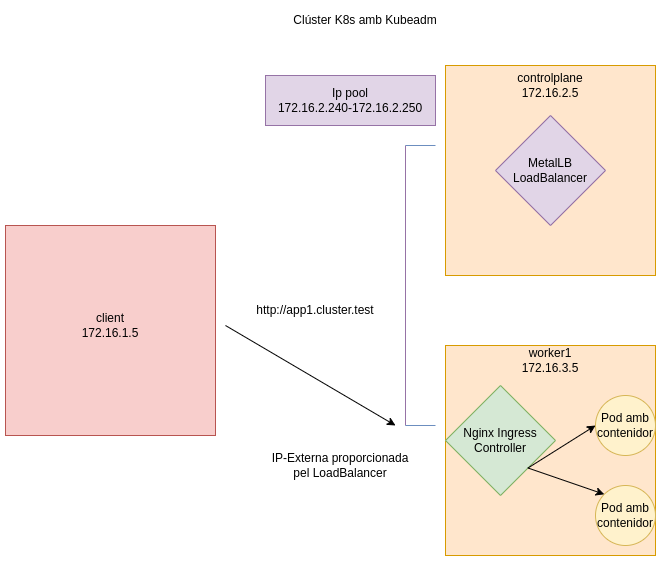

Desplegament d'un clúster de Kubernetes amb kubeadm
Vídeo a la prova realitzada: Desplegament d'un clúster de Kubernetes amb kubeadm
Objectiu

Desplegar un clúster de Kubernetes amb kubeadm.
Instal·lació pas a pas de kubernetes amb kubeadm
Controlplane
Mode root
Actualitzar el sistema
Instal·lar paquets necessaris
apt install curl apt-transport-https vim git wget \
software-properties-common lsb-release ca-certificates -y
Desactivar swap
Carregar els següents mòduls:
Actualitzar el kernel per permetre el tràfic
cat << EOF | tee /etc/sysctl.d/kubernetes.conf
net.bridge.bridge-nf-call-ip6tables = 1
net.bridge.bridge-nf-call-iptables = 1
net.ipv4.ip_forward = 1
EOF
Verificar que els canvis s'han realitzat
Instal·lar la clau necessària per a la instal·lació
sudo mkdir -p /etc/apt/keyrings
curl -fsSL https://download.docker.com/linux/ubuntu/gpg \
| sudo gpg --dearmor -o /etc/apt/keyrings/docker.gpg
echo \ "deb [arch=$(dpkg --print-architecture) signed-by=/etc/apt/keyrings/docker.gpg] \
https://download.docker.com/linux/ubuntu \
$(lsb_release -cs) stable" | sudo tee /etc/apt/sources.list.d/docker.list > /dev/null
Instal·lar containerd
apt-get update && apt-get install containerd.io -y
containerd config default | tee /etc/containerd/config.toml
sed -e 's/SystemdCgroup = false/SystemdCgroup = true/g' -i /etc/containerd/config.toml
systemctl restart containerd
Crear un nou repositori per a Kubernetes
echo 'deb https://packages.cloud.google.com/apt kubernetes-xenial main' > /etc/apt/sources.list.d/kubernetes.list
Afegir la clau GPG per als paquets:
curl -fsSL "https://packages.cloud.google.com/apt/doc/apt-key.gpg" | sudo gpg --dearmor -o /etc/apt/trusted.gpg.d/kubernetes-archive-keyring.gpg
Actualitzar i instal·lar kubeadm, kubectl i kubelet
Configurar els paquets perquè no s'actualitzin
Afegir un DNS local al servidor controlplane
Crear un fitxer de configuració pel clúster
# vim kubeadm-config.yaml
apiVersion: kubeadm.k8s.io/v1beta3
kind: ClusterConfiguration
kubernetesVersion: 1.28.2
controlPlaneEndpoint: "controlplane:6443"
networking:
podSubnet: 172.16.2.0/24
Inicialitzar el node controlplane
Logout root i configurar l'usuari com administrado del clúster
exit
mkdir -p $HOME/.kube
sudo cp -i /etc/kubernetes/admin.conf $HOME/.kube/config
sudo chown $(id -u):$(id -g) $HOME/.kube/config
less $HOME/.kube/config
Instal·lar el gestor de paquets Helm
wget https://get.helm.sh/helm-v3.13.2-linux-amd64.tar.gz
tar -zxvf helm-v3.13.2-linux-amd64.tar.gz
mv linux-amd64/helm /usr/local/bin/helm
Seleccionar un pod de xarxa per al CNI (Container Networking Interface) hi ha diversos, Cilium o Calico són bastant populars.
helm repo add cilium https://helm.cilium.io/
helm repo update
helm template cilium cilium/cilium --namespace kube-system > cilium.yaml
kubectl apply -f cilium.yaml
Instal·lar autocompletat
sudo apt-get install bash-completion -y
source <(kubectl completion bash)
echo "source <(kubectl completion bash)" >> $HOME/.bashrc
Worker1
Repetir els mateixos passos que al node anterior des de l'inici fins a afegir un DNS local al node worker
Mode root
Actualitzar el sistema
Instal·lar paquets necessaris
apt install curl apt-transport-https vim git wget \
software-properties-common lsb-release ca-certificates -y
Desactivar swap
Carregar els següents mòduls
Actualitzar el kernel per permetre el tràfic
cat << EOF | tee /etc/sysctl.d/kubernetes.conf
net.bridge.bridge-nf-call-ip6tables = 1
net.bridge.bridge-nf-call-iptables = 1
net.ipv4.ip_forward = 1
EOF
Verificar que els canvis s'han realitzat
Instal·lar la clau necessària per a la instal·lació
sudo mkdir -p /etc/apt/keyrings
curl -fsSL https://download.docker.com/linux/ubuntu/gpg \
| sudo gpg --dearmor -o /etc/apt/keyrings/docker.gpg
echo \ "deb [arch=$(dpkg --print-architecture) signed-by=/etc/apt/keyrings/docker.gpg] \
https://download.docker.com/linux/ubuntu \
$(lsb_release -cs) stable" | sudo tee /etc/apt/sources.list.d/docker.list > /dev/null
Install containerd
apt-get update && apt-get install containerd.io -y
containerd config default | tee /etc/containerd/config.toml
sed -e 's/SystemdCgroup = false/SystemdCgroup = true/g' -i /etc/containerd/config.toml
systemctl restart containerd
Crear un nou repositori per a Kubernetes
echo 'deb https://packages.cloud.google.com/apt kubernetes-xenial main' > /etc/apt/sources.list.d/kubernetes.list
Afegir la clau GPG per als paquets:
curl -fsSL "https://packages.cloud.google.com/apt/doc/apt-key.gpg" | sudo gpg --dearmor -o /etc/apt/trusted.gpg.d/kubernetes-archive-keyring.gpg
Actualitzar i instal·lar kubeadm, kubectl i kubelet
Configurar els paquets perquè no s'actualitzin
Afegir un DNS local al servidor worker1
Per unir el worker al clúster del controlplane es pot utilitzar la instrucció join amb el token inicial que mostra la primera vegada el controlplane o bé generar un nou token
Creació d'un nou token (al controlplane)
Generació del discovery token CA cert hash per permetre la unió del node worker
openssl x509 -pubkey \
-in /etc/kubernetes/pki/ca.crt | openssl rsa \
-pubin -outform der 2>/dev/null | openssl dgst \
-sha256 -hex | sed 's/^.* //'
Utilitzar el token i el discovery token al worker node
sudo -i
kubeadm join --token token_exemple controlplane:6443 \
--discovery-token-ca-cert-hash sha256:hash_exemple
Anar al controlplane i verificar que tot funciona correctament
Permetre que controlplane pugui contenir pods que no siguin del sistema
Verificar que cilium i coredns funcionen correctament
Actualització de crictl